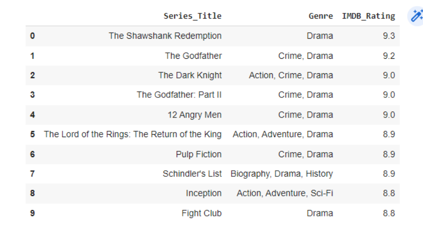
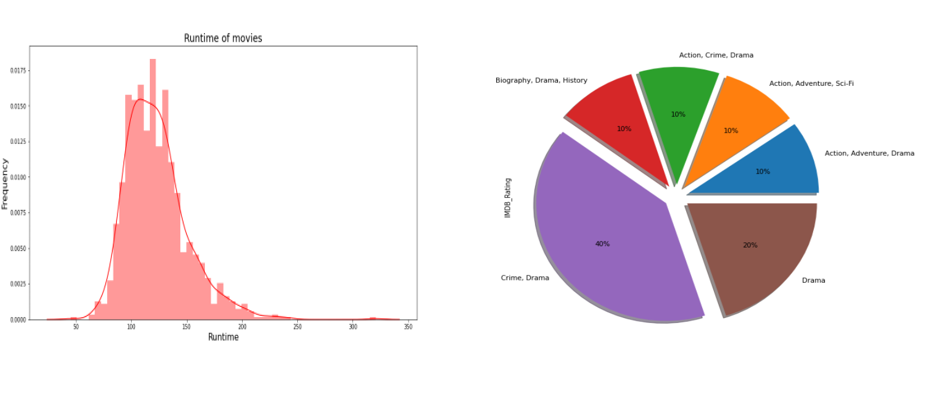
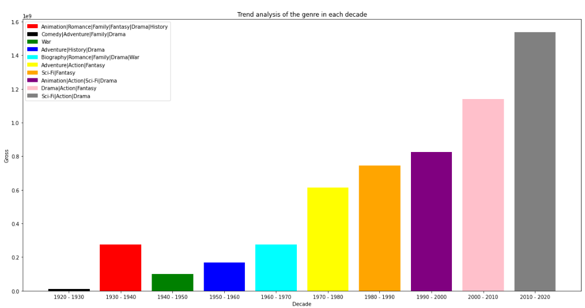
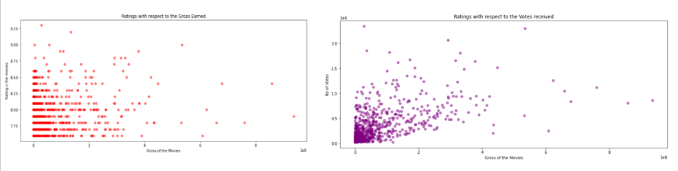

The dataset used here was obtained from Kaggle. To load the dataset and perform the EDA and Data visualisation, I have used Pandas. The dataset contains the following columns.
Exploratory Data Analysis and Data Visualization on IMDB Dataset
I've always like playing around with data. Another interest of mine is watching and discussing movies. Combining these two interests was amusing. In this project I have performed analysis of IMDB dataset obtained from kagggle. Few of the business questions that explored are as below.
1. What are the top rated movies?
2. Which genre of the movies is mostly liked by the audience?
3. Which movies have the highest gross?
4. Do the movies with highest IMDB rating earn highest gross always?
5. What is the trend analysis of the movie genre preferences by the audience?
6. Who are the top rated direnctors and actors?
7. What runtime is good to get a good IMDB rating and gross?
Dataset.
Results and Analysis.
I've always considered that 1994 was the year when the best movies were made (Forrest Gump, Pulp Fiction, The Shawshank Redemption, etc.). The table below shows the highest rated IMDB movies.
The association between film duration and film rating was another intriguing study result. The longer the film, the higher the likelihood of receiving favorable ratings. However, for films with run times of +3 hours or more, the ratings begin to fluctuate considerably.Another noteworthy finding is that the "Crime-Drama" genre has maintained its appeal over the years and is the highest-rated movie genre.
Next, I decided to analyse the trend of genre in each decade and it gave some intresting insights. The decades from 1994-2000 were filled with genre like Family, drama, history, romance, etc. Each decade had its own favourite genere. This dramatically changed in the year 2000, when the genre Action, Sci-Fi, Adventure became the most popular till the year 2020. The bar plot below shows the trend analysis for each genre.
The average number of voters per film, as shown in the below graph, peaked in the 1990s and early 2000s and has been steadily declining since then. Despite rising movie ratings, fewer people are voting for each movie. This indicates to me that voters frequently cast more votes for movies they enjoy. They don't bother rating a movie that was mediocre or dull. However, it seems to only apply to recent movies, not ones from the 1990s or 2000s. The plots below show the avegrage gross earned by movies and thier compariosn with IMDB rating and Number of votes.
For detailed resutls of analysis and code please visit github from the below link.
View on Github